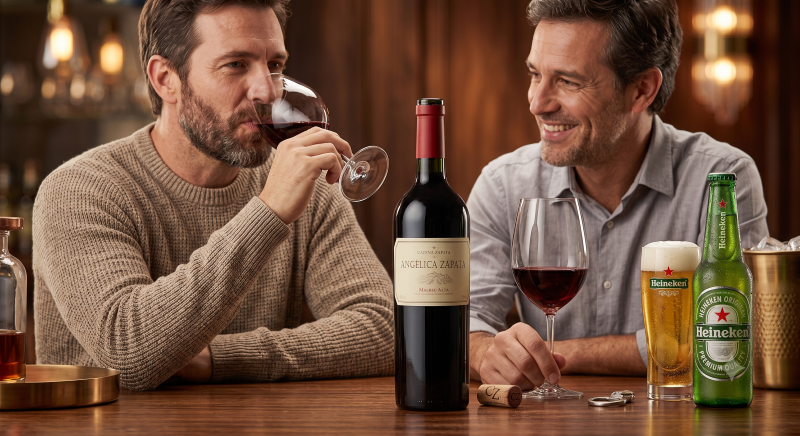

Pasión por los buenos momentos
El Mercadito nació de una idea muy simple: los mejores momentos de la vida siempre se acompañan con algo rico para tomar y compartir. Somos más que un simple almacén de vinos y cervezas; somos ese rincón de tu barrio (y ahora también digital) donde empieza tu previa, tu cena familiar o tu brindis más especial. Nos enorgullece ofrecer una selección cuidadosamente elegida de etiquetas, desde las bodegas más tradicionales hasta opciones frescas y novedosas, sin olvidarnos de los clásicos de siempre. Nuestro objetivo es brindarte variedad, calidad y, sobre todo, la mejor atención, para que siempre te lleves una sonrisa y la bebida perfecta.
